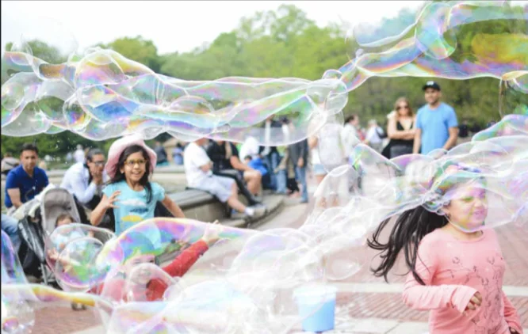
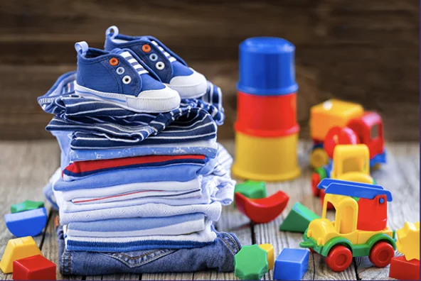

Accueil
Qui sommes nous ?
Contact
Actualités
Familles Rurales est une association nationale reconnue d’utilité publique qui agit en faveur des familles sur tout le territoire, en milieu rural et périurbain.
Nos articles
Nos territoires

Agir avec nous

Lire l'article 1
Lire l'article 2